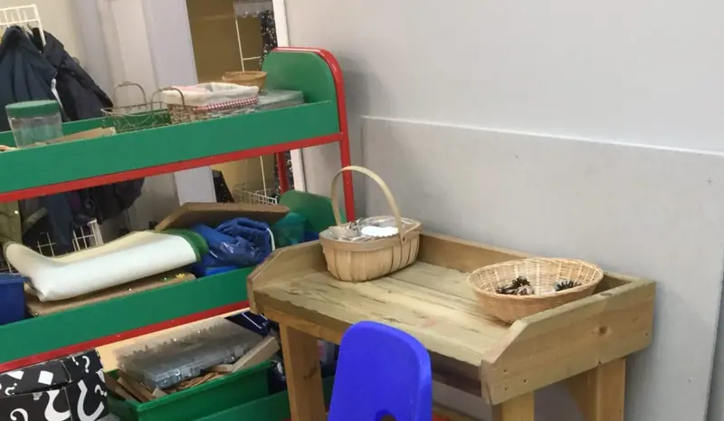
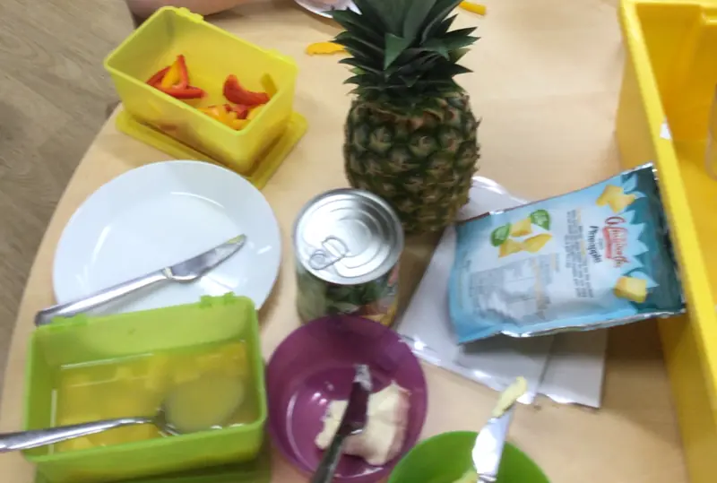

You are here: Our nursery
Inside our nursery
A big, bright playroom, a garden with a boat in it, and a lot of muddy wellies.
Inside
Children spend most of the day in our large playroom, which was recently extended and gets plenty of daylight. There's also a quiet room, a family room, a kitchen and toilets.
Children move freely between the playroom and the garden.

Outdoors
Our large garden is enclosed and secure. It has a mud kitchen, raised beds for growing vegetables and an old boat to climb in. Children play outside every day, in all weathers.
We also run Forest Kindergarten trips to the local woods, with parents helping out.
Our garden after snow. A slow pan across one photo, not a film.
Food
Children help themselves at the snack bar: milk, water, fruit, vegetables and savouries. Lunch is a choice of two hot meals, made by Sugarsnap Caterers to Scotland's Setting the Table guidance. Children can bring a packed lunch instead.
We're nut-free. We talk through allergies and cultural needs when you enrol. We email you a 4-week menu.

Learning through play
Play is at the heart of the day, following Scotland's Curriculum for Excellence. Staff plan around what each child is interested in.
- Every child gets free books from Dolly Parton's Imagination Library.
- Children count with giant dominoes and program a Bee-Bot robot.
- Our eco work has earned 8 Eco-Schools Green Flags. Children grow potatoes, catch rainwater and run a weekly book sale.
Getting ready for school
We work with Kilbarchan Primary and other schools to help children move up to Primary 1. Children visit their new school, and each one gets a Primary 6 buddy to look out for them in their first weeks.
Inspection
The Care Inspectorate last inspected us on 10 to 12 October 2022. Its report was completed on 14 October 2022.
- How good is our care, play and learning?5, Very good
- How good is our setting?5, Very good
- How good is our leadership?4, Good
- How good is our staff team?5, Very good
“Children were happy, confident and motivated to play and learn.”
Read the full report (PDF)
See our record on the Care Inspectorate website
Run by parents
Local parents set up the nursery in 1984. In 1998, parents voted to keep it community-run. Since 1999 we've been in our own building in the primary school grounds.
Today we're a charity (a SCIO). A board of trustees, elected by parents each year, runs the nursery and employs the staff.
Start here
Come for a look round. Phone or email us to book a visit and meet the team.